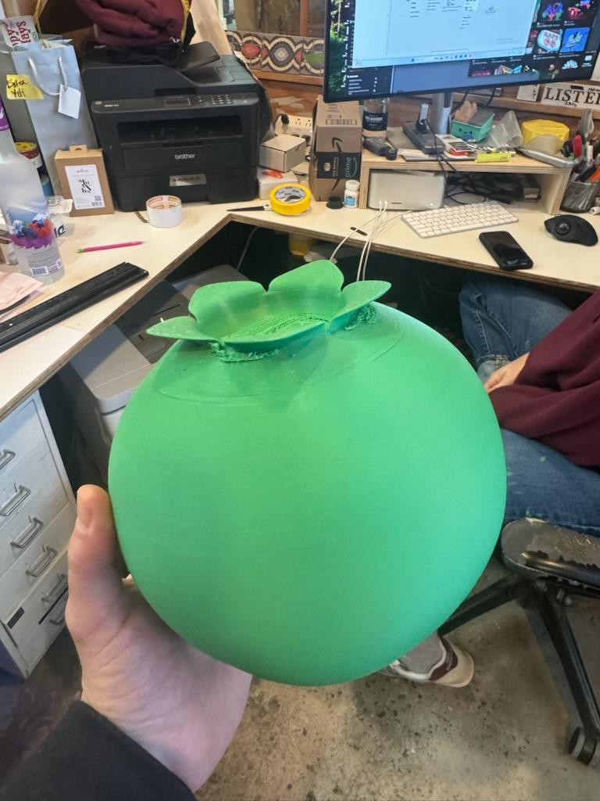
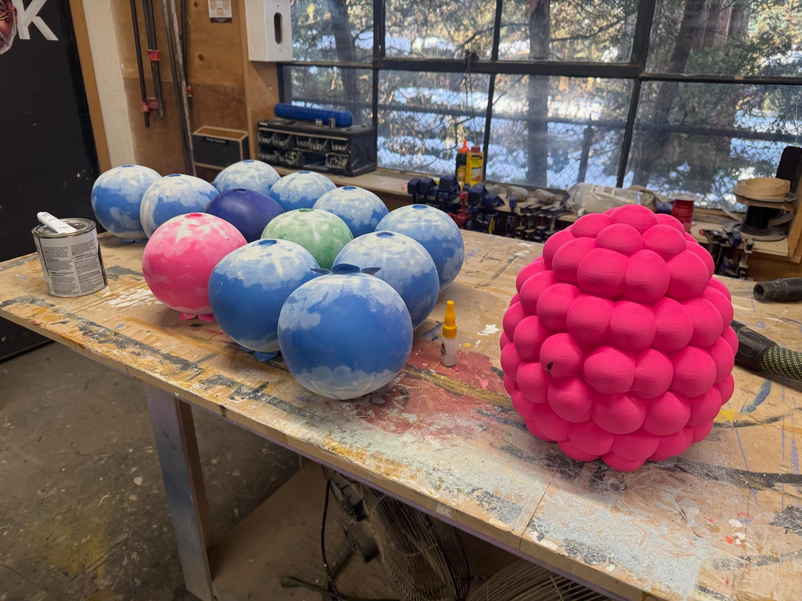
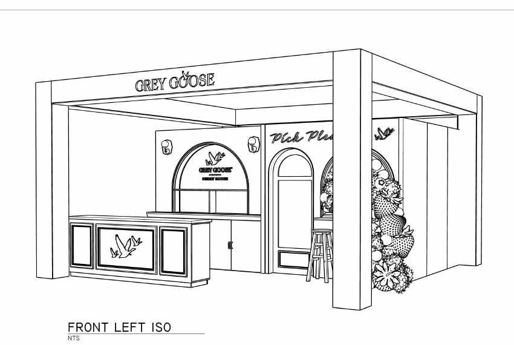

Oversized Berry Print Files
Custom 3D print file creation for a large berry display at an event in Miami.






Print-ready file creation
The work began with generic STL files. I adapted and manipulated the geometry to make the forms printable, improving the way the parts could be oriented, divided, and produced.
- Challenge: Prepare oversized berry geometry for a desktop 3D printer
- Solution: Modify the STL files and optimize the parts for efficient printing
- Large strawberries: Slice the extra-large forms into sections that fit the printer
- Result: Print-ready files for large berry forms